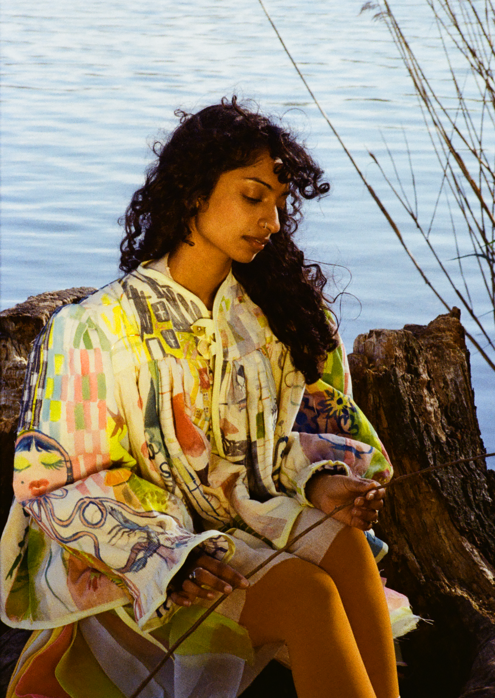

The Perfect Human book is a pseudo-scientific analysis of beauty standards, gender norms, and social conventions.

Chopard ICE CUBE campaign with Emily Ratajkowski.

Redesign of the orginal published First Things First 1964 manifesto.

The Smell Of The Sun, a collection that explores the idea of home across borders & generations.

Tiny Synth is a web synthesizer made for musicians who want to have a little fun online.